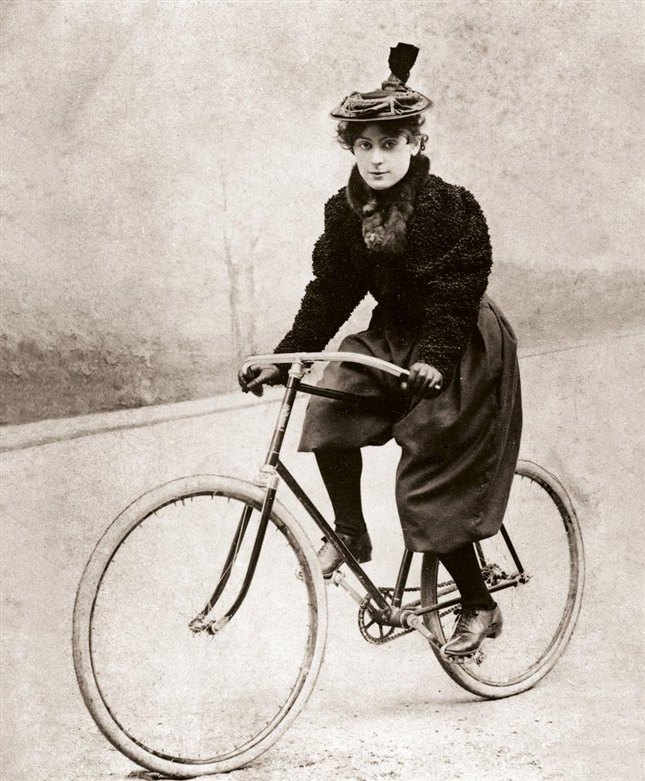

A finales del siglo XIX, las mujeres se convirtieron en las usuarias más entusiastas de las nuevas bicicletas con pedales que les proporcionaron una libertad desconocida hasta entonces.
"Antes pensaba que lo peor que podía hacer una mujer era fumar, pero he cambiado de idea. Lo peor que he visto en mi vida es una mujer montando en bicicleta". Así se manifestaba el 25 de julio de 1891 la corresponsal del Chicago Tribune en una pequeña columna en la que afirmaba que podría hacerle la vida imposible a su futura nuera si ésta demostraba la más mínima inclinación por el ciclismo; las pioneras de la bicicleta estaban empezando a causar una impresión abrumadora.
El camino de la bicicleta había sido largo. Los primeros modelos, desde 1817, consistían en una mera barra que unía dos ruedas. Alrededor de 1870 se le añadieron pedales, lo que aparte de permitir avanzar montado también aumentaba las posibilidades de salir indemne de la aventura. Estos "velocípedos", con la rueda delantera más grande que la trasera, fueron sustituidos por bicicletas con ruedas de igual tamaño y cadenas que transmitían la energía del pedal a la rueda trasera. Mucho más seguras, las bicicletas de principios de la Belle Époque empezaron a venderse a precios exorbitantes a aquellos que podían permitírselo.
"Los manuales de comportamiento de la época dejaban muy claro que lo último que debía hacer una dama en la calle era llamar la atención."
Las mujeres de clase alta fueron atreviéndose a montar en este nuevo invento, que ponía a su alcance la posibilidad de desplazarse con libertad y rapidez en un mundo que las condenaba al enclaustramiento en la vivienda familiar. Estas pioneras atraían todas las miradas, lo que ya de por sí era malo. Los manuales de comportamiento de la época dejaban muy claro que lo último que debía hacer una dama en la calle era llamar la atención de los viandantes. Andar deprisa era un signo de mala educación, lo mismo que hablar alto o mover los brazos lejos del cuerpo.
"Las damas debían mantener la espalda recta y las manos suavemente sobre el manillar, evitando movimientos bruscos o posturas que pudieran parecer poco femeninas."